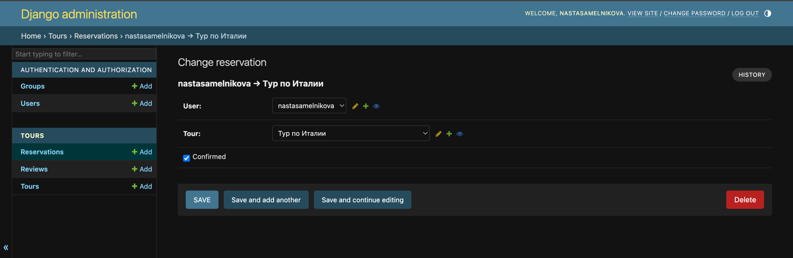
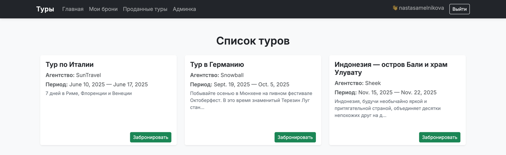
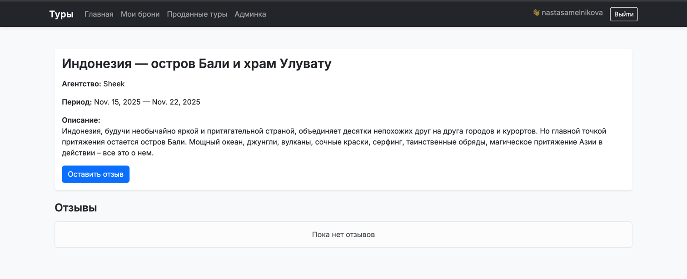

Лабораторная работа №2: РЕАЛИЗАЦИЯ ПРОСТОГО САЙТА СРЕДСТВАМИ DJANGO
Вариант №4 — “Список туров туристической фирмы”
Цель работы
овладеть практическими навыками и умениями реализации web-сервисов средствами Django 2.2
Создать сайт туристической фирмы, позволяющий пользователям:
- регистрироваться и авторизовываться,
- просматривать туры,
- бронировать туры и управлять своими бронями,
- оставлять отзывы с рейтингом (1–10),
- просматривать статистику проданных туров по странам.
Cтруктура проекта
tour_agency/
├── manage.py
├── tour_agency/
│ ├── settings.py
│ ├── urls.py
│ ├── wsgi.py
│ └── asgi.py
└── tours/
├── admin.py
├── apps.py
├── models.py
├── views.py
├── urls.py
├── templates/
│ └── tours/
│ ├── base.html
│ ├── tour_list.html
│ ├── my_reservations.html
│ ├── add_review.html
│ ├── tour_detail.html
│ └── sold_tours.html
└── migrations/
└── 0001_initial.py
1. Создание и настройка проекта
- Установлено виртуальное окружение и необходимые пакеты:
bash pip install django psycopg2-binary bootstrap5 mkdocs - Создан проект:
django-admin startproject tour_agency
python manage.py startapp tours
Добавлено приложение tours в INSTALLED_APPS и настроено подключение к PostgreSQL:
DATABASES = {
'default': {
'ENGINE': 'django.db.backends.postgresql',
'NAME': 'tour_db',
'USER': 'postgres',
'PASSWORD': '123',
'HOST': 'localhost',
'PORT': '5432',
}
}
Вывод:
Базовая структура Django-проекта создана, связь с PostgreSQL установлена.
2. Моделирование данных
Определены три модели:
class Tour(models.Model):
name = models.CharField(max_length=100)
agency = models.CharField(max_length=100)
country = models.CharField(max_length=100, default='')
description = models.TextField()
start_date = models.DateField()
end_date = models.DateField()
payment_terms = models.TextField()
def __str__(self):
return self.name
class Reservation(models.Model):
user = models.ForeignKey(User, on_delete=models.CASCADE)
tour = models.ForeignKey(Tour, on_delete=models.CASCADE)
reserved_on = models.DateTimeField(auto_now_add=True)
confirmed = models.BooleanField(default=False)
def __str__(self):
return f"{self.user.username} → {self.tour.name}"
class Review(models.Model):
tour = models.ForeignKey(Tour, on_delete=models.CASCADE)
user = models.ForeignKey(User, on_delete=models.CASCADE)
comment = models.TextField()
rating = models.IntegerField(default=5)
date_posted = models.DateTimeField(auto_now_add=True)
def __str__(self):
return f"{self.tour.name} ({self.rating}/10)"
Вывод:
Созданы взаимосвязанные модели, реализующие основные сущности предметной области: тур, бронирование и отзыв. Связи построены по принципу “один-ко-многим” через ForeignKey.
3. Настройка маршрутов (urls.py)
Созданы пути для всех функций приложения:
urlpatterns = [
path('', views.tour_list, name='tour_list'),
path('register/', views.register, name='register'),
path('login/', auth_views.LoginView.as_view(template_name='tours/login.html'), name='login'),
path('logout/', auth_views.LogoutView.as_view(next_page='/'), name='logout'),
path('reserve/<int:tour_id>/', views.reserve_tour, name='reserve_tour'),
path('my_reservations/', views.my_reservations, name='my_reservations'),
path('delete_reservation/<int:res_id>/', views.delete_reservation, name='delete_reservation'),
path('tour/<int:tour_id>/', views.tour_detail, name='tour_detail'),
path('review/<int:tour_id>/', views.add_review, name='add_review'),
path('sold_tours/', views.sold_tours, name='sold_tours'),
]
Вывод:
Маршрутизация реализована в соответствии с архитектурой MVC — каждая страница приложения обрабатывается отдельным view-функцией.
4. Реализация представлений (views.py)
tour_list — отображает все туры.
register, login, logout — регистрация и аутентификация пользователей.
reserve_tour, my_reservations, delete_reservation — операции с бронированиями.
add_review, tour_detail — добавление и просмотр отзывов.
sold_tours — аналитика продаж по странам.
5. Шаблоны и дизайн
Для клиентской части использован Bootstrap 5. Создана базовая структура шаблонов:
base.html – общая навигация
tour_list.html – список туров
my_reservations.html – личные брони
tour_detail.html – описание тура + отзывы
add_review.html – форма добавления отзыва
sold_tours.html – таблица проданных туров
6. Админ-панель Django
Добавлены модели Tour, Reservation, Review.
Администратор подтверждает бронирования через флаг Confirmed. 
Вывод:
Админ-интерфейс полностью функционален и позволяет управлять всеми данными без прямого доступа к БД.
7. Реализация аналитической таблицы
Создан метод sold_tours:
def sold_tours(request):
data = (
Reservation.objects.filter(confirmed=True)
.values('tour__country', 'tour__name', 'tour__agency')
.annotate(sold_count=Count('id'))
.order_by('tour__country')
)
return render(request, 'tours/sold_tours.html', {'data': data})
Вывод:
Собирается статистика по странам и турам. Подтверждённые бронирования отображаются в виде таблицы с количеством продаж.
8. Тестирование работы сайта
| Проверяемый функционал | Результат |
|---|---|
| Регистрация и вход | Успешно |
| Просмотр туров | Отображаются все туры |
| Бронирование | Создаётся запись в БД |
| Подтверждение админом | Статус меняется на “Подтверждено” |
| Удаление брони | Успешно |
| Добавление отзывов | Отображаются с именем и рейтингом |
| Таблица продаж | Работает и сортируется по странам |
Примеры экранов интерфейса
Главная страница (список туров): 
Личные брони:

Описание тура с отзывами: 
Проданные туры по странам:

Общий вывод
В результате выполнения лабораторной работы было создано полноценное веб-приложение туристической фирмы на фреймворке Django с использованием базы данных PostgreSQL. Система реализует все основные функции, указанные в задании:
- регистрация и авторизация пользователей;
- просмотр и бронирование туров;
- редактирование и удаление собственных бронирований;
- добавление отзывов и выставление рейтингов;
- подтверждение бронирований администратором через встроенную панель Django-admin;
- формирование таблицы проданных туров по странам.
В ходе работы были закреплены практические навыки:
- проектирования моделей данных и связей между ними;
- использования ORM Django для взаимодействия с базой данных;
- построения маршрутов и шаблонов;
- организации клиентского интерфейса с помощью Bootstrap 5;
- работы с админ-панелью и системой аутентификации пользователей.
Итоговый продукт имеет понятный интерфейс, чёткую структуру и легко расширяется.